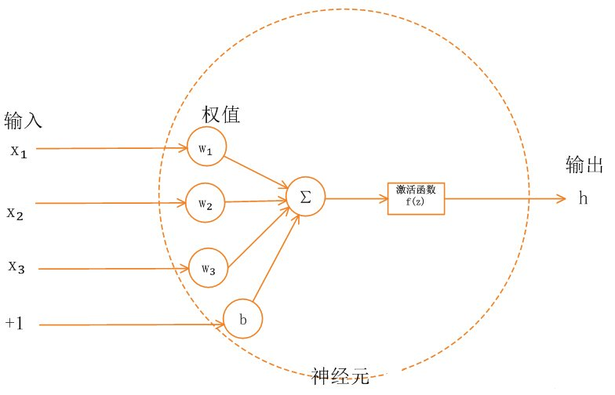
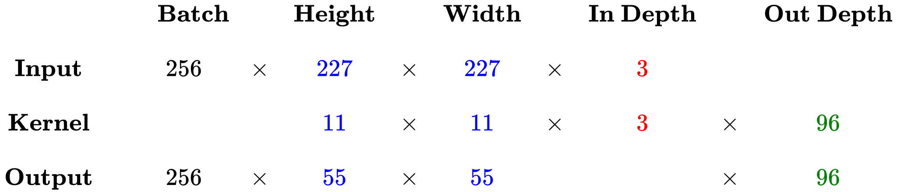

Let’s start ！
* 先验分布
先验分布（prior distribution）一译“验前分布”“事前分布”。是概率分布的一种。与“后验分布”相对。与试验结果无关，或与随机抽样无关，反映在进行统计试验之前根据其他有关参数口的知识而得到的分布。
* 参数 超参数

* 如何理解向量空间
容纳运动是空间的本质特征，“空间”是容纳运动的一个对象集合，而变换则规定了对应空间的运动。所以说，向量空间也是一个集合，这个集合对向量的加法和数乘是封闭的，也就是说，只要向量在这个空间内，那么向量按照加法和数乘的方式运动，就会一直在这个空间里。所以，对加法和数乘运算封闭的向量空间也称为线性空间。
* 在GAN网络中，潜在空间 (latent space)

* BatchNorm
我们都知道，深度学习的话尤其是在CV上都需要对数据做归一化，因为深度神经网络主要就是为了学习训练数据的分布，并在测试集上达到很好的泛化效果，但是，如果我们每一个batch输入的数据都具有不同的分布，显然会给网络的训练带来困难。另一方面，数据经过一层层网络计算后，其数据分布也在发生着变化，此现象称为Internal Covariate Shift，接下来会详细解释，会给下一层的网络学习带来困难。batch norm直译过来就是批规范化，就是为了解决这个分布变化问题。
详情可参考batchnorm原理及代码详解
* 正交规范化 （orthogonal regulatization）
正交阵的一个条件是：WTW=I 其中，W就是正交阵，I是单位阵。
正交阵的好处是，如果一个矩阵与一个正交阵相乘，这个矩阵的范数不会变化。保证范数就可以缓解梯度消失和爆炸。参考
* 谱归一化 （Spectral Normalization）
在GAN中，判别器训练越好，生成器梯度消失越严重。Spectral Norm使用一种更优雅的方式使得判别器 D 满足利普希茨连续性，限制了函数变化的剧烈程度，从而使模型更稳定。参考
* 训练误差和泛化误差
机器学习在训练数据集上表现出的误差叫训练误差；在任意测试数据集上表现出来的误差的期望值叫做泛化误差。
* 欠拟合和过拟合

* Softmax
我们知道max，假如说我有两个数，a和b，并且a>b，如果取max，那么就直接取a，没有第二种可能。但有的时候我不想这样，因为这样会造成分值小的那个饥饿。所以我希望分值大的那一项经常取到，分值小的那一项也偶尔可以取到，那么我用softmax就可以了。
现在还是a和b，a>b，如果我们取按照softmax来计算取a和b的概率，那a的softmax值大于b的，所以a会经常取到，而b也会偶尔取到，概率跟它们本来的大小有关。所以说不是max，而是*Soft *max。
SVM只选自己喜欢的男神，Softmax把所有备胎全部拉出来评分，最后还归一化一下
* 激活函数
什么是激活函数
首先要了解神经网络的基本模型。单一神经元模型如下图所示：

神经网络中的每个神经元节点接受上一层神经元的输出值作为本神经元的输入值，并将输入值传递给下一层，输入层神经元节点会将输入属性值直接传递给下一层（隐层或输出层）。在多层神经网络中，上层节点的输出和下层节点的输入之间具有一个函数关系，这个函数称为激活函数（又称激励函数）。
激活函数的用途（为什么需要激活函数）？
如果不用激励函数（其实相当于激励函数是f（x）= x），在这种情况下你每一层节点的输入都是上层输出的线性函数，很容易验证，无论你神经网络有多少层，输出都是输入的线性组合，与没有隐藏层效果相当，这种情况就是最原始的感知机（Perceptron）了，那么网络的逼近能力就相当有限。正因为上面的原因，我们决定引入非线性函数作为激励函数，这样深层神经网络表达能力就更加强大（不再是输入的线性组合，而是几乎可以逼近任意函数）。
常见激活函数
Sigmoid函数、tanh函数、Relu函数及其改进型（如Leaky-ReLU、P-ReLU、R-ReLU等）在多层神经网络中应用比较多。
* 目标函数、损失函数、代价函数
损失函数（loss function）和代价函数（cost function）是同一个东西，目标函数是一个与他们相关但更广的概念，对于目标函数来说在有约束条件下的最小化就是损失函数。
* 正则化和正则化率


* 什么是dropout
dropout是指在深度学习网络的训练过程中，对于神经网络单元，按照一定的概率将其暂时从网络中丢弃。注意是暂时，对于随机梯度下降来说，由于是随机丢弃，故而每一个mini-batch都在训练不同的网络。
* Boosting Algorithm
提升方法是基于这样一种思想：对于一个复杂任务来说，将多个专家的判断进行适当的综合所得出的判断，要比其中任何一个专家单独的判断好。通俗点说，就是”三个臭皮匠顶个诸葛亮”。
* 什么是梯度？
在介绍梯度之前我们要先回顾一下偏导数和方向导数的概念，因为梯度是基于这两个概念提出来的。
偏导数
一个多变量的函数的偏导数是它关于其中一个变量的导数，而保持其他变量恒定。例如： fx(x, y) 指的是函数在y方向不变，函数值沿着x轴方向的导数。
方向导数
但是偏导数有一个缺点，就是只能表示多元函数沿坐标轴方向的变化率，但是很多时候要考虑多元函数沿任意方向的变化率，于是就有了方向导数。
某个方向的导数，本质就是函数在A点上该方向切线的斜率；每个切线都代表一个方向，每个方向都是有方向导数的。
梯度
梯度是针对某一点P的梯度，是一个向量A，它表示在点P的A方向上的函数变化最快，方向导数最大。当我们找到了这个向量A，就说是该点P的梯度。梯度是方向导数中的最大值，梯度一定是函数上升的方向， 最小值为0。
梯度下降法就是沿着梯度下降的方向求解极小值，梯度上升法沿就是着梯度上升的方向可以求得最大值。
什么叫梯度下降的方向？因为梯度本身有方向，所以梯度方向的负方向就是梯度下降的方向。同理，梯度上升的方向。
* 池化层
池化层主要的作用：
（1）首要作用，下采样（downsamping）
（2）降维、去除冗余信息、对特征进行压缩、简化网络复杂度、减小计算量、减小内存消耗等等。各种说辞吧，总的理解就是减少参数量。
（3）实现非线性（这个可以想一下，relu函数，是不是有点类似的感觉？）。
（4）可以扩大感知野。
（5）可以实现不变性，其中不变形性包括，平移不变性、旋转不变性和尺度不变性。
* CNN中卷积层计算细节
参考 知乎Michael Yuan
卷积层尺寸的计算原理
输入矩阵格式：四个维度，依次为：样本数、图像高度、图像宽度、图像通道数
输出矩阵格式：与输出矩阵的维度顺序和含义相同，但是后三个维度（图像高度、图像宽度、图像通道数）的尺寸发生变化。
权重矩阵（卷积核）格式：同样是四个维度，但维度的含义与上面两者都不同，为：卷积核高度、卷积核宽度、输入通道数、输出通道数（等于卷积核个数）
输入矩阵、权重矩阵、输出矩阵这三者之间的相互决定关系
卷积核的输入通道数（in depth）由输入矩阵的通道数所决定。（红色标注）
输出矩阵的通道数（out depth）由卷积核的输出通道数所决定。（绿色标注）
输出矩阵的高度和宽度（height, width）这两个维度的尺寸由输入矩阵、卷积核、扫描方式所共同决定。计算公式如下。（蓝色标注)
* 注：以下计算演示均省略掉了 Bias ，严格来说其实每个卷积核都还有一个 Bias 参数。
标准卷积计算举例
以 AlexNet 模型的第一个卷积层为例，
- 输入图片的尺寸统一为 227 x 227 x 3 （高度 x 宽度 x 颜色通道数），
- 本层一共具有96个卷积核，
- 每个卷积核的尺寸都是 11 x 11 x 3。
- 已知 stride = 4， padding = 0，
- 假设 batch_size = 256，
- 则输出矩阵的高度/宽度为 (227 - 11) / 4 + 1 = 55

* heuristic-based method
什么叫启发式的方法，就是经验论，根据经验规则进行发现的方法。
* 集成学习(Ensemble learing)
集成学习算法是机器学习的一种新的学 习思想，该学习算法把同一个问题分解到多个不同的模块中，由多个学习器一起参与 学习，共同解决目标问题，从而提高分类器的泛化能力。
* 非平衡数据
非平衡数据是指数据集中某一类的样本数量明显少于其他类样本的数目，其中占 数量最多的一类样本被称为多数类，而占数量最少的一类则称为少数类。
* 正样本和负样本
一种解释：在二分类数据集中，多数类简称为正类，少数类简称为负类。
二种解释：一般性模型优化的定义无所谓严格区分正负样本。实际中，应该以目标为导向，如果你的目标是识别出位置错误的信息，那么你应该定义位置错误的样本是正样本，然后根据选好的数据集进行相应的优化。如果你的目标是为了识别出位置正确的样本，那你应该定义位置正确的样本是正样本。至于为什么要根据目标来定义正样本，因为你在优化损失函数的时候，是根据预测错误的正样本来进行优化的，如果你的目标定义错误的话，你的优化方向可能是反过来的，特别是对正负样本不平衡的数据集来说。
Concept Drift（概念漂移）
concept drift在机器学习、时间序列以及模式识别领域的一种现象。如果是在机器学习领域中，这个概念指的就是一个模型要去预测的一个目标变量，概念漂移就是这个目标变量随着时间的推移发生改变。概念漂移在很多领域都具有很重要的意义，例如对金融衍生品价格预测、动态控制等。
目前有很多广泛存在的数据，像金融数据、交通数据等，这类数据不同于传统的static data（静态数据），而是作为一种数据量大、实时性强的data stream（流式数据）而存在。流式数据分为稳定的数据流和动态的数据流，稳定的数据流具有稳定独立同分布的特点，而动态数据流则是不独立同分布的，所以会产生概念漂移的现象。